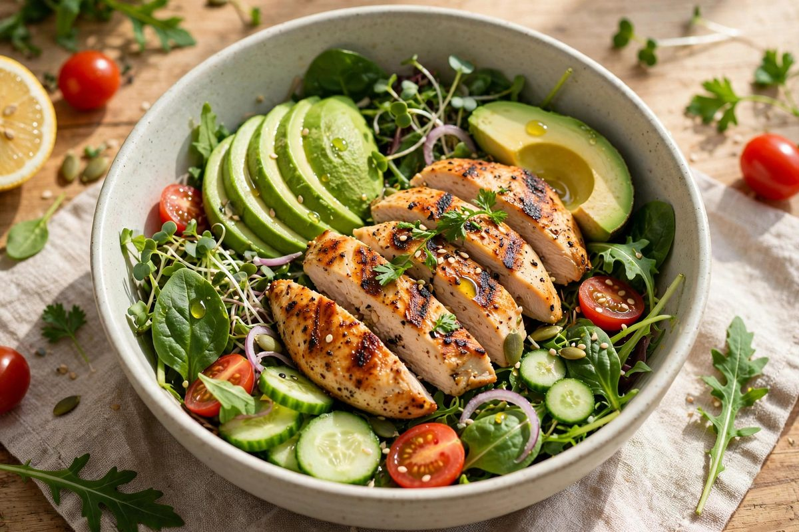

Home › Guides
Low-Carb Lunch Ideas: Quick, Filling and Easy to Pack

Lunch is the meal that most often breaks a low-carb diet. You are busy, you are hungry, and the easiest option is a sandwich or a takeaway. But a low-carb lunch does not need to be complicated or time-consuming. With a few staples and a little planning, lunch can be quick, filling, and genuinely enjoyable.
Salads that fill you up
A salad is only a good lunch if it contains protein and fat, not just leaves. Add chicken, tuna, eggs, cheese, or chickpeas, and dress it with olive oil. A chicken Caesar salad without croutons, or a Greek salad with feta and olives, are both satisfying lunches.
Prepare salad ingredients in bulk on Sunday: cook chicken, boil eggs, and chop vegetables. Then assemble a salad in two minutes each morning. Keep the dressing separate until you eat, so the salad stays crisp.
Lettuce wraps and roll-ups
Large lettuce leaves make excellent wraps. Fill them with tuna, chicken, or turkey, plus avocado and a little mayonnaise. They are lighter than bread wraps, and they travel well if packed carefully.
Deli meat roll-ups are another quick lunch: roll slices of ham or turkey around cheese and a pickle, and pack them with a handful of nuts and a piece of fruit. They need no cooking and no heating, which makes them ideal for work.
Soups and leftovers
Soup is a good lunch if it is based on vegetables and protein, not potatoes or noodles. A cauliflower and cheddar soup, or a chicken and vegetable soup, are both low in carbs and easy to make in a large pot and freeze in portions.
Leftovers are the easiest lunch of all. Last night's roast chicken, stir-fry, or frittata make a better lunch than anything you can buy. Cook a little extra at dinner and pack the rest for lunch the next day.
Packing lunch for work
Use a lunchbox with compartments, so the salad, protein, and snack stay separate. Keep a bottle of water and a small bag of nuts at your desk for emergencies. If you buy lunch, choose a salad bar or a grill, and ask for dressing on the side.
Plan your lunches for the week on Sunday, and shop for them in one trip. A planned lunch is a good lunch; an unplanned lunch is usually a sandwich from the nearest shop.
A week of packed lunches
A week of packed lunches can be planned on Sunday. Monday: chicken salad with olive oil dressing. Tuesday: tuna lettuce wraps with avocado. Wednesday: leftover beef stir-fry with cauliflower rice. Thursday: egg salad with celery and mayonnaise. Friday: turkey and cheese roll-ups with a salad.
Pack each lunch in a container with compartments, and keep the dressing separate until you eat. Add a small bag of nuts and a bottle of water. A planned lunch is a good lunch, and it costs far less than buying lunch every day.
On Friday, use whatever is left from the week: a few slices of chicken, some cheese, and a handful of vegetables make a perfectly good lunch. Keep a small tub of nuts and a bottle of water in your bag for the journey home, so a missed lunch does not become a pastry from the station. A packed lunch that you enjoy is a habit that sticks, and it saves money every single week.
Frequently Asked Questions
What is a good low-carb lunch for work?
A salad with chicken or tuna, lettuce wraps, or leftovers from dinner. Pack the dressing separately so it stays fresh.
Can I eat sandwiches on a low-carb diet?
Bread is high in carbs, so use lettuce leaves as wraps instead, or eat the filling as a salad.
How do I stop getting hungry before dinner?
Add protein and fat to lunch, such as eggs, cheese or avocado, and drink water. A filling lunch should last four hours.